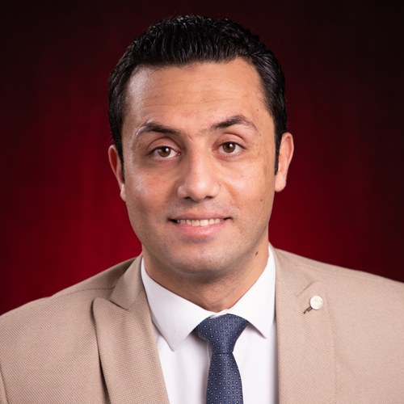

Mohamed A. Hanafy
Ph.D. Candidate, Electrical and Computer Engineering
University of Louisville · Louisville Automation and Robotics Research Institute (LARRI)
I am a Ph.D. candidate and Graduate Research Assistant at LARRI, advised by Dr. Dan O. Popa. I work on AI-driven brain-computer interfaces (BCIs), multimodal signal processing, adaptive robotic control, and human-robot interaction. My NSF-supported research focuses on decoding human intent in real time from EEG, physiological, behavioral, and speech signals to improve assistive mobility, rehabilitation robotics, patient-assistance systems, and industrial automation.
Dissertation: Robust Brain-Computer and Multimodal Interfaces for Adaptive Shared Control in Human-Robot Interaction.
News
- Oct 2026Presented two works at IEEE IROS 2026, Pittsburgh: EEG motor imagery for assistive robot navigation, and the evaluation of a robotic nursing assistant from neuroadaptive ambulation to hospital deployment.
- 2026New journal article in Electronics (MDPI): real-time neuroadaptive control with tactile calibration for physical human-robot interaction.
- 2026Completed the 130-hour g.tec BCI & Neurotechnology Spring School.
- 2025Received the Theobald Scholarship Award, University of Louisville.
- 2025Journal article in Technologies (MDPI) on temporal robustness of motor-imagery BCIs.
Research Interests
EEG Brain-Computer Interfaces
Real-time motor-intent decoding, robustness of motor-imagery BCIs across sessions and time, and BCI control of assistive robots.
Neural and Adaptive Control
Neuroadaptive controllers and adaptive user interfaces that make robot teleoperation and physical interaction smoother and safer.
Healthcare and Assistive Robotics
The Adaptive Robotic Nursing Assistant (ARNA): patient ambulation, tactile sensing, adverse-event detection, and hospital deployment.
Multimodal Signal Processing and Vision
EEG, speech, and physiological signals; computer vision for logistics automation; compressed sensing for wireless health monitoring.
Publications
Full list on Google Scholar.
Journal Articles
-
Real-Time Neuroadaptive Control with Tactile Calibration for Physical Human-Robot Interaction
Electronics, MDPI, 2026
-
A Dual-Validation Framework for Temporal Robustness Assessment in Motor Imagery Brain-Computer Interfaces
Technologies, MDPI, 2025
-
Evaluation of a Neuroadaptive Controller in Admittance Control of a Mobile Robot for Physical Human-Robot Interaction
Intelligent Service Robotics, 2025
-
Adaptive User Interface with Parallel Neural Networks for Robot Teleoperation
IEEE Robotics and Automation Letters (RA-L), 2024; presented at ICRA 2025
-
Rakeness with Block Sparse Bayesian Learning for Efficient ZigBee-Based EEG Telemonitoring
International Journal of Communication Systems, Wiley, 2019
Conference and Workshop Papers
-
Toward Robust Assistive Robot Navigation with EEG Motor-Imagery
IEEE/RSJ IROS 2026 Workshop on Nonverbal Cues for Human-Robot Cooperative Intelligence
-
A Robust EEG Brain-Computer Interface Approach for Decoding Hand and Foot Motor Imagery
ACM 18th International Conference on PErvasive Technologies Related to Assistive Environments (PETRA), 2025
-
Assessment of BCI Performance for Human-Robot Interaction
ACM 17th PETRA Conference, 2024
-
Comparative Study of One-Handed vs. Two-Handed EEG Intent Recognition for Applications in Human-Robot Interaction
ACM 17th PETRA Conference, 2024 Best Workshop Student Paper Award
-
Compressed Sensing for Reliable Body Area Propagation with Efficient Signal Reconstruction
29th International Conference on Microelectronics (ICM), 2017
Under Review
-
Tactile Handlebar and Deep Learning for Safe Interaction with a Robot Nursing Assistant
Submitted to IEEE Transactions on Medical Robotics and Bionics, 2026
Funded Research Projects
NSF EPSCoR KAMPERS (#1849213)
Kentucky Advanced Manufacturing Partnership for Enhanced Robotics and Structures. BCI, adaptive robotic control, and human-robot interaction; Study Coordinator.
NSFNSF Future of Work (#2026584)
Enhancing Future Work of Nursing Professionals through Collaborative Human-Robot Interfaces, built around the ARNA nursing-assistant robot.
NSFUPS Robotic Manipulation for Sorting
Computer vision for object detection, grasp efficiency, and barcode identification in logistics automation (Phases I and II).
IndustryJon Rieger Seed Grant
AI-enabled analysis of emotions in daylong child-centered speech recordings, with UofL and Washington State University.
Seed GrantCode
EEG Data Collector
Tools for recording EEG motor-imagery sessions.
PythonMotor Imagery Pipeline
Motor-imagery classification and evaluation code.
PythonHand and Foot EEG Dataset
EEG motor-imagery data for hand and foot movements.
DatasetLENA Analysis
MATLAB pipeline for analyzing LENA recordings, classifying interactions, and computing pitch and loudness measures.
MATLABExperience
Graduate Research Assistant: AI, BCI, Robotics, and HRI Sep 2023 to present
LARRI, University of Louisville
EEG-based BCI frameworks, neuroadaptive control, ARNA healthcare robotics, and computer vision for logistics. Mentor a multidisciplinary student BCI team.
Research Collaborator: Multimodal Speech and Healthcare Analytics Jan 2026 to present
University of Louisville and Washington State University
Automated acoustic-analysis pipelines and speech emotion recognition for child-centered speech recordings.
Graduate Teaching Assistant 2023 to 2026
Department of ECE, University of Louisville
Control systems, digital signal processing, embedded systems, and microprocessor laboratories.
Graduate Research Assistant: Computer Vision and Assistive Technologies Jan 2022 to Aug 2023
CVIP Laboratory, University of Louisville
Visual assistance for visually impaired people; 3D street mapping from monocular video with NeRFs.
Research and Teaching Assistant 2015 to 2021
Electronics and Communications Engineering, Zagazig University, Egypt
Compressed sensing and block sparse Bayesian learning for low-power EEG telemonitoring over body area networks.
Education
Ph.D., Electrical and Computer Engineering 2022 to present
University of Louisville, USA · GPA 3.89/4.00
M.S., Electronics and Communications Engineering 2015 to 2019
Zagazig University, Egypt
Thesis: Compressed Sensing for Energy-Efficient Wireless Transmission
B.S., Electronics and Communications Engineering 2008 to 2013
Zagazig University, Egypt
Excellent with honors; ranked 1st in class
Awards and Honors
- Theobald Scholarship Award, University of Louisville, 2025
- COABE Students as Leaders Mini Grant, 2025
- NSF PETRA Doctoral Consortium Award, ACM PETRA, 2024
- Best Workshop Student Paper Award, ACM PETRA, 2024
- Outstanding Poster Presentation Award, KY NSF EPSCoR, 2024
- Ranked 1st in undergraduate class, Zagazig University, 2013
- College Excellence Award, all five undergraduate years, Zagazig University, 2008 to 2013
Service
Reviewer: IEEE Transactions on Systems, Man, and Cybernetics: Systems; IEEE Journal of Biomedical and Health Informatics; IEEE Access; International Journal of Digital Health; Frontiers in Robotics and AI; ACM PETRA; IEEE SoutheastCon; IEEE Smart Mobility; IEEE IC2AI.
Program Committee: International Symposium on Embodied Intelligence and Humanoid Robots (Roboi), 2025.
Judge: Redbird Robotics; VEX V5RC Kentucky State Championship.
Contact
Louisville Automation and Robotics Research Institute (LARRI)
University of Louisville, Louisville, KY, USA
mohamed.hanafy@louisville.edu